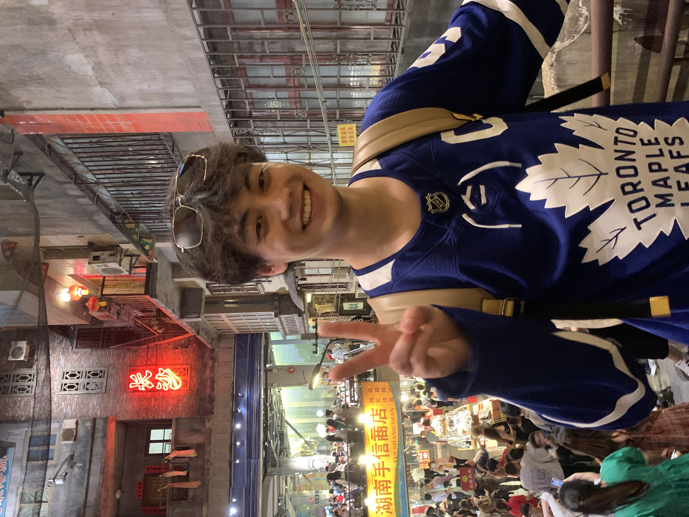

Skip to content
Chongyu Zhu
Home
Publications
CV
Activities
Beyond research
Outside the lab
A little of life away from the desk.

A day out in a Toronto Maple Leafs jersey.
← Back to the academic side